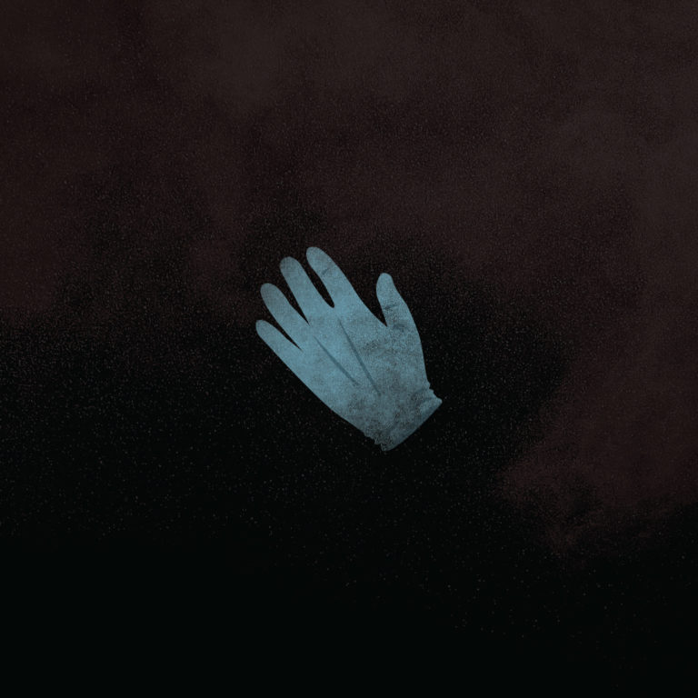
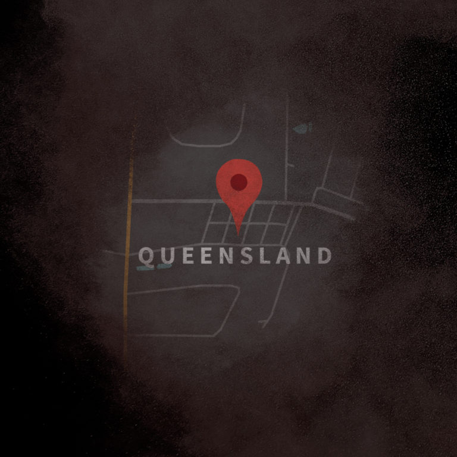

THE EPISODES
Up and Vanished features main episodes as well as BONUS episodes. The only episodes that will be featured are the main episodes.
Episode One
Cold As Alaska
Filmmaker Payne Lindsey sets out to produce a true-crime documentary and discovers an intriguing unsolved missing persons case from Ocilla, Georgia.
Episode Two
White Rabbits
Payne Lindsey travels to Ocilla and meets with Dusty Vassey, reporter for the local newspaper. He also talks with his grandma’s friend Melba, who has a tip that may or may not mean something.
Episode Three
The Alibi
Payne and Maurice discuss the prime piece of evidence, the blue latex glove found outside Tara’s house with some kind of DNA evidence on it. Was it dropped before or after family friend Heath Dykes came to the house to check on Tara?
Episode Four
Snapdragon Road
Payne Lindsey travels to Ocilla and meets with Dusty Vassey, reporter for the local newspaper. He also talks with his grandma’s friend Melba, who has a tip that may or may not mean something.
Episode Five
The Black Truck
Filmmaker Payne Lindsey sets out to produce a true-crime documentary and discovers an intriguing unsolved missing persons case from Ocilla, Georgia.
Episode Six
Suicide
Payne talks again with dog owner Jim Hanley about evidence he found at the Snapdragon Road house. He interviews GBI Agent Gary Rothwell about Heath Dykes’ trip to Tara’s house (at her mother’s request) and his numerous phone calls to her.
Episode Seven
Phineas Gage
Payne dives into the circumstances surrounding the 2010 suicide of a former student of Tara’s, including a chat with Dusty Vassey, who knew the young man’s brother.
Episode Eight
In the Box
We continue to investigate the behavior of the young man who died by suicide in 2010. Payne interviews the man’s brother as well as a clinical psychologist regarding his head injury and subsequent personality change.

Episode Nine
The Glove
Payne and Maurice examine some emails sent by Tara in the weeks before she disappeared, focusing on her breakup with Marcus Harper and her emotional state of mind.
Episode Ten
George Harrison
Payne addresses the issue of several people who were in or around Tara’s house before and during the initial police search, including a conversation with Tara’s friend Mandy, who saw some oddities in how the house was arranged.
Episode Eleven
"There's Our Guy"
Payne and Maurice try to figure out who’s behind the “George Harrison” Facebook account, including a conversation for Troy Davis who was Facebook friends with him.
Episode Twelve
"I Love You Too"
Payne and Maurice think they’ve figured out how “George Harrison” (now identified as Jose) knew about the UAV podcast before it started.
Episode Thirteen
Who Is Ryan Duke
Ryan Duke’s arrest is announced at a GBI press conference in Ocilla, and the UAV team scrambles to find out who in the world he is. Payne first hears about a pecan orchard on the way to Fitzgerald...
Episode Fourteen
The Pecan Grove
Legal expert Phillip Holloway explains how gag orders work, and a former associate of Bo Dukes recalls partying in the pecan orchard years ago and that Ryan Duke might have driven a black pick-up truck...

Episode Fifteen
Older, Wiser Fool
Payne and Donald visit Tara’s house, meeting the current tenant and examining the yard where the latex glove was found.
Episode Sixteen
Conspiracy
Payne talks true crime podcasts with Crimetown creator/host Mark Smerling. On a trip to Ocilla, he also visits Marcus Harper's mother.
Episode Seventeen
The Deal
Payne discusses Ryan Duke's state of mind as an indictment comes down, plus a potential deal is struck.
Episode Eighteen
Not Guilty
Every story has an ending...
Episode Nineteen
Brooke's Story
Bo Dukes's girlfriend finally tells story.

Episode Twenty
Queensland
The investigation continues as Payne Lindsey uncovers new details and circles back to old evidence.
Episode Twenty-One
Statute of Limitations
Payne Lindsey explores new evidence of the 2005 orchard search and Philip Holloway weighs in on the statute of limitations.
Episode Twenty-Two
The Gag Order
Finally, some truth.
Episode Eleven
Who Is Bo Dukes
Exploring the details of Bo Dukes' mysterious conversation with a stranger.
Episode Twenty-Four
Black Out
Part I
Part 1 of 2: After 2 years investigating and bringing weekly updates on the disappearance of Tara Grinstead, Up and Vanished Season 1 is coming to a close.
Episode Twenty-Four
Black Out
Part II
Part 2 of 2: After 2 years investigating and bringing weekly updates on the disappearance of Tara Grinstead, Up and Vanished Season 1 is coming to a close.